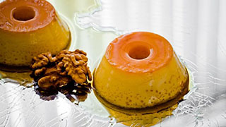

Pudim com Leite Condensado
Rendimento: 20 porções

Ingredientes
Massa
1 lata de leite condensado
1 xícara de leite de vaca
4 ovs inteiro
Calda
1 xícara de(chá) de açucar
1/3 de xícara(chá) de água
Modo de preparo
Calda
- Em uma panela, misture a água e o açucarm até
formar uma calda
- Unte uma forma com a calda e reserve
Massa
- Bata todos os ingredientes no liquidificador
e despeje na forma caramelizada
- Leve para assar em banho-maria por 40 minutos
- Desinforme e sirva
Voltar